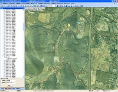

-
- Basic info. 基本信息
- Infomation.个人信息: 刘世永 / 男 / 27岁 / 江西赣州
- English.英语水平: CET-6
- Company.现就职于: 华为技术有限公司 (高级工程师 专业任职三级)
- Education.学历: 国防科学技术大学-通信工程专业-硕士
-
- Experience. 项目与工作经验
华为技术有限公司 2012实验室 中央硬件工程院（2019.05 - ）
-
华为机器视觉算子开发与性能提升项目
作为项目经理，对标Halcon负责整体华为机器视觉算子库的建设，包括和俄罗斯MSU（莫斯科国立大学），HSE（俄罗斯高等经济大学）等的对外技术合作，以及算子的自研与性能优化，实现对标Halcon性能精度240+算子的交付，10%~20%的性能超越。
-
华为5G鲁棒性智能检测项目
作为AI算法工程师，基于华为自研达芬奇架构NPU芯片，实现嵌入式atlas AI算法开发，AI边缘与云端检测能力
-
华为在线标注系统与AI缺陷数据管理系统开发
作为软件工程师，基于Nodejs+Express+vue独立设计与开发了，AI在线标注系统与缺陷样本管理系统的前后台，有效提升整体AI训练效率50%以上，实现端到端的标注+训练+检测全流程
-
显示屏Mura缺陷主观客观化项目
作为AI算法工程师，对标人眼基于深度学习实现Mura缺陷程度分级，实现semu的有效区分范围在0.01内，检测精度98%以上
-
PadBending外观缺陷AI检测算法
作为AI算法工程师，实现小样本学习，对标人眼基于深度学习实现PadBending缺陷检出率95%以上，过检率5%以内，PK掉友商及竞争者，通过客户产线验收，获得一致好评，荣获2012实验室硬工协作之星称号
-
华为视觉开发平台iVision Studio开发
作为软件工程师，参与iVision Studio的首版本开发与设计，攻克众多技术难题，实现图形变量可视化，底层调试引擎等大量技术竞争力点。获得公司优秀开发者称号
华为技术有限公司 大数据应用开发部（2017.04 - 2019.05）
-
华为Universe大数据平台Campaign与Customer Insight组件开发
负责用户画像与智能推荐模块，参与并完成lookalike相似人群扩展算法与协同过滤算法的开发。解决了冷启动，数据稀疏等瓶颈问题，有效提升推荐系统的点击率0.1个点，获得公司明日之星与软件改革英雄称号
国防科学技术大学（2014.09 - 20161230）
-
国家“863”项目高性能地理信息系统与软件技术研发项目（2016.03 - ）
研究Spark分布式遥感影像处理的相关算法，基于Geotrellis的分布式IO方法，实现了海量遥感影像分布式并行瓦片化算法。
-
湖南省国土厅无人机智能巡航软件研发项目（2016.05 - 2016.06）
基于Android平台研发无人机智能巡航系统 实现无人机预设航线巡航，重要目标自动抓拍，结果入库可回溯，航迹可视化等。
-
湖南第二测绘院高性能卫星影像分幅输出系统研发项目（2015.06 - 2015.11）
基于MPI设计和实现分幅输出系统软件模块的核心算法，单次数据量最大8TB，工作效率从3个月到3天的巨大提升。提出并实现了众多高性能遥感图像处理算法，例如遥感影像并行瓦片化算法、遥感影像并行融合算法，基于高层级瓦片的低层级瓦片并行合成算法，大规模遥感影像金字塔并行构建算法等。
-
电子科学与工程学院学员大队人员信息管理系统 （2014.11 - 2015.06）
基于SQLite数据库开发学院全体学员信息查询与管理系统，包含Android手机端以及windows PC。PC端采用c++语言编写， 界面GUI采用微软MFC图形界面库，开发平台采用visual studio2015，系统共六大模块分别为信息查询模块、数据统计模块、信息添加模块、 人员删除模块、信息更新模块、导入导出模块。
-
电子科学与工程学院政治工作办公室（2014.09 - 2014.12）
负责学院官方网站的维护工作，相关办公软件使用方面的技术指导，以及日常会务安排，人员调动等相关行政工作管理。
中国地质环境监测院（2014.1 - 2014.6）
-
滑坡灾害自动识别检测系统研发项目
负责研发滑坡灾害自动识别检测系统以及相关的用户培训工作，GUI界面基于QT， 采用面向对象的分类技术，通过预先对影像进行多尺度分割，得到相关的滑坡候选对象， 而后基于一些预设的滑坡提取规则逐步剔除混淆对象，最终的到精确的滑坡对象。
中地数码集团有限公司（2013.06 - 2013.09）
-
三维可视化遥感数据管理系统研发项目
基于MapGIS平台和MFC进行二次开发，原型系统搭建与软件测试。 遥感影像数据管理系统开发，系统可对各种数据类型的遥感影像进行入库管理以及在三维地球上可视化显示。

中国地质大学（武汉）、武汉大学（2013.04 - 2013.06）
-
国家“973”高分辨率遥感数据精处理专项 视频
对针对芦山地区灾后的无人机以及卫星影像，基于MFC以及OSG研发三维地形可视化系统，可从第一视角或者第三视角对受灾区域进行实时可视化漫游显示， 作品成果在央视早间新闻栏目进行展示。
中科院测量与地球物理研究所（2013.01 - 2013.04）
-
国家地理国情调查项目
基于ArcGIS以及Erdas对Landset ETM-7遥感影像进行处理包括影像的投影变换、分幅裁剪、 几何校正以及最后的专题图制作。还有部分湖南省国情数据统计与分析汇总的相关工作。


-
- Skill. 技能清单
-
C/C++
CPU、GPU、SIMD、分布式等算法并行优化方法
QT、MFC GUI编程
熟练掌握darknet AI训练平台
熟练掌握makefile、CMake命令
熟练掌握计算机图形学以及遥感图像处理相关算法，有大量的OpenCV开发实践经验
-
Java/Scala
熟悉Spring Boot，熟练掌握Restful微服务开发
熟悉Android SDK以及NDK开发，有大量的APP开发经验
Spark分布式机器学习算法研发
熟练掌握HDFS、Hadoop操作
-
Python
熟练掌握TensorFlow、Keras、slim模型开发
c++、python混合编程
Pandas、SciPy等相关数据挖掘方法
-
Web
熟练掌握Web开发技术，AngularJS、Vue、Nodejs、Electron、Express等相关前后端技术
-
Database
数量掌握传统MySQL、Oracle、SQLite等关系型数据库以及redis等nosql数据库
其他
-
熟练掌握Linux、Arm开发
熟练使用R语言数据分析以及可视化
熟练使用 Latex 进行论文写作以及排版
-
- Awards. 竞赛情况
-
- Awards. 所获荣誉
-
华为软件改革英雄
-
华为硬工之星
-
华为明日之星
-
2016届国防科大优秀毕业生
成绩同级学员前5%（3/60）
-
2014年度国家奖学金
-
2011全球华人大学生汉字书写大赛三等奖
-
- Achievements. 科研成果
-
[1] 刘世永.一种折叠书架[P].湖北：CN201938793U,2011-08-24.(实用新型专利)链接
[2] 刘世永,吴秋云,陈荦,李军,景宁.基于高层级地图瓦片的低层级瓦片并行合成技术[J].地理信息世界,2015,06:51-55.链接
[3] 陈荦,吴秋云,刘世永,熊伟,钟志农,吴烨.一种混合并行方式的栅格影像金字塔构建方法[P].湖南: CN201610018294.X, 2016-01-12.(发明专利)链接
[4] 刘世永,李军,吴秋云,陈荦,熊伟.一种并行方式栅格影像切片方法[P].湖南:CN201610066304.7, 2016-01-29.(发明专利)链接
[5] Liu, S.Y, Wu, Q.Y. A Cluster-based Remotely Sensed Image Mosaic Algorithm with Parallel IO[C].Geoinformatics, 2016, in press. (EI)链接
[6] 刘世永,吴秋云,陈荦.一种基于MPI的大规模栅格影像并行瓦片化算法[J].计算机工程与应用, 2016链接
[7] Liu, S.Y, Luo C. An MPI+OpenMP Hybrid Parallel Paradigm for Pyramid Building Algorithms of Large-scale Remotely Sensed Image[J].JCISE,2016, in pending trial. (SCI)链接
-
- OpenSource. 开源贡献
-
- Education. 工作与教育经历
-
华为技术有限公司 - 高级工程师 2017年4月 -● AI组负责人，软件改革英雄、明日之星、硬工之星
-
国防科学技术大学 - 电子与通信工程 硕士 2014年9月 - 2016年12月● 专业第3（前5%） | 2016届优秀毕业生，2015年度优秀学员，2016年度优秀学员
-
中国地质大学（武汉） - 遥感科学与技术 本科 2010年9月 - 2014年7月

{kind=link}